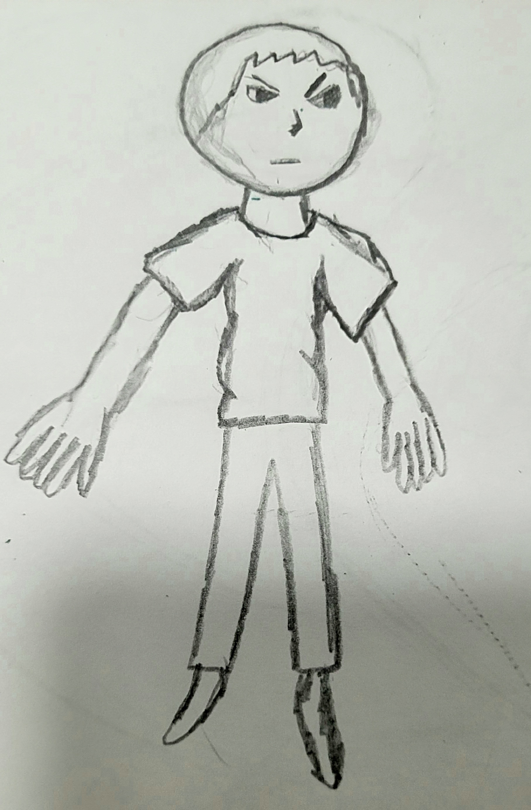
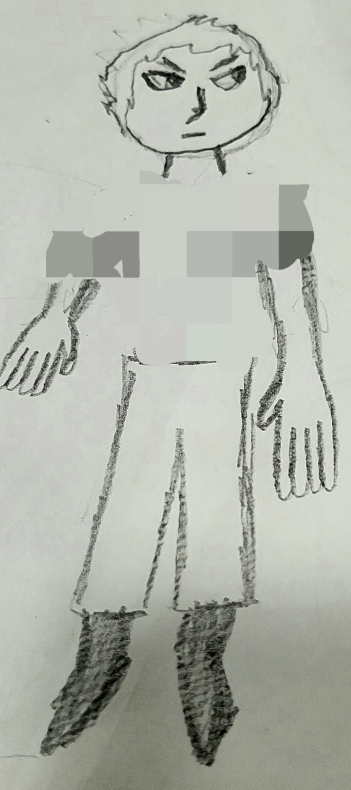
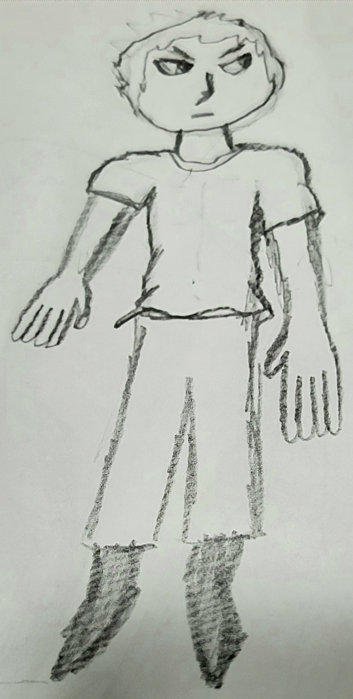

Lição 1: Refinação do desenho
Cara, se você quer aprender técnicas pra desenhar melhor, você tá no lugar certo, eu vou te ensinar 3 táticas de desenho em todo esse site. A primeira é que você não pode ser perfeccionista, eu era muito perfeccionista quando eu comecei a desenhar, se você for, só piora, você fica bravo com você mesmo e vai, vai, vai até uma hora que você simplesmente tá pegando fogo só de raiva, guarde bem isso, não seja perfeccionista. Pois é, quando você começa um desenho, você faz a base, e com essa técnica você começa a base fraquinho, depois vai refinando até você achar que tá bom.

Eu sei que a minha letra é muito feia, mas vai praticando essa técnica, tenta fazer as seguintes coisas:
- Uma xícara de café
- Um livro
- Um vaso de flores
- Uma maçã
- Um lápis
- Uma espada
- Um arco
- Um caderno ou bloco de notas
- Uma planta ou árvore
- Um par de óculos
- Um relógio
- Uma guitarra
Lição 2: Formas básicas
Quando você olha pra um objeto, ele pode ter uma ou várias formas, mas esse objeto tem uma forma principal, e nessa técnica fazemos essa forma, e depois vamos modelando como um vaso de barro, nessa técnica também juntamos a tática passada.

E agora só pra praticar, tenta fazer um notebook ou um vaso.
Lição 3: Sombra realista
Tá, se você já leu as 2 lições passadas, já pode ler essa, se não, volta lá, as sombras são melhores com o lápis, mas quando você já manja em desenho, vale a pena fazer sombra com caneta, por que ela tem uma precisão maior, mas se você ainda é iniciante, faz a sombra primeiro com lápis e depois com cuidado bota a caneta por cima.

Erros comuns de desenho
Tem pessoas que fazem alguns erros no desenho delas, agora vê se você faz algum desses erros:
O erro é que o boneco não tem ombro, esse erro se dá por que fazem primeiro a roupa, primeiro faz o corpo, depois a roupa...
Corpo:  Roupa: 
O erro no desenho é que o cabo da espada tá torto, era pra ele tá reto, pra resolver esse erro é simples, desenha primeiro a espada, depois a mão...